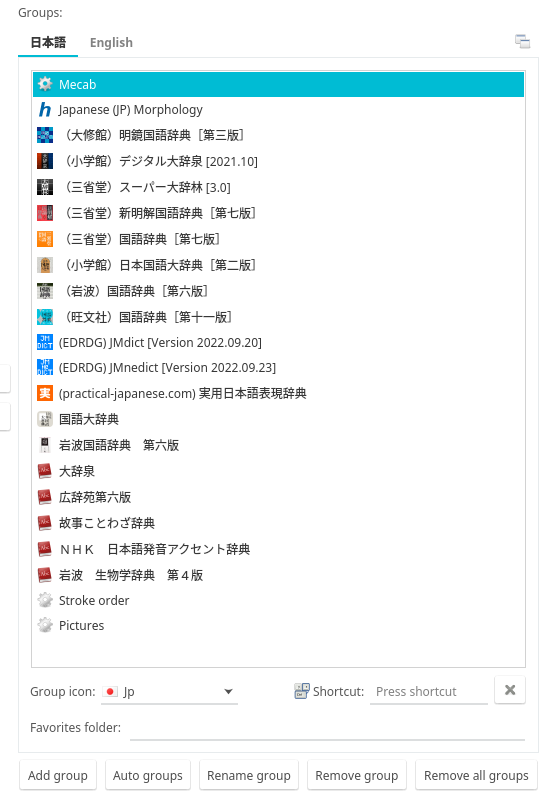
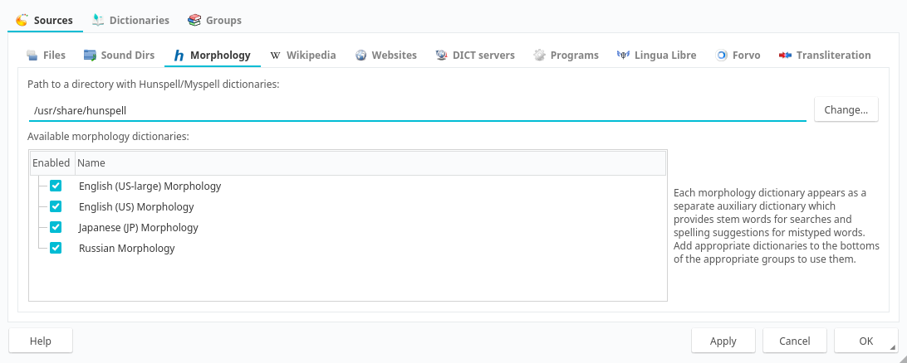
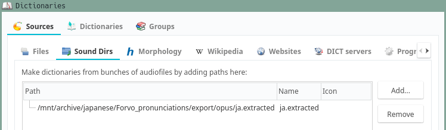
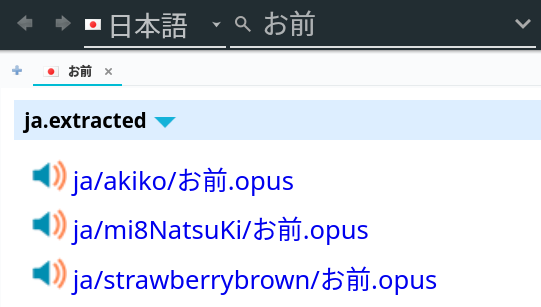
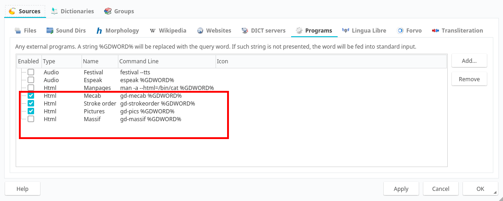
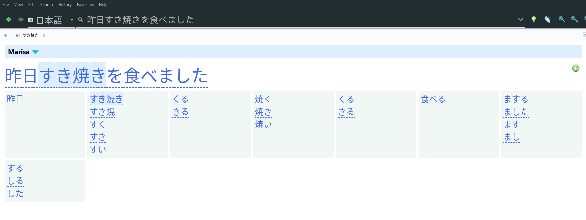
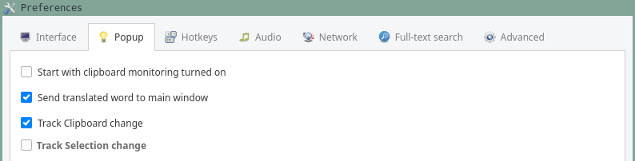
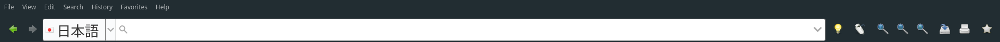

Setting up GoldenDict-NG
GoldenDict-NG is a libre dictionary application for GNU/Linux and other OSes. Like Qolibri, it lets you search multiple dictionaries at the same time so for every word you look up you immediately get a number of definitions. GoldenDict-NG is a great tool for language learners, and it becomes especially helpful when one switches from bilingual dictionaries to monolingual dictionaries. It can aid during the monolingual transition thanks to the ability to look up many words at once in separate tabs, simplifying recursive look-ups.
Installation
GoldenDict-NG is available as a free download from GitHub or from repositories of many GNU distributions. GoldenDict-NG is a successor of the vanilla GoldenDict. It can create Anki cards, which is important for people following the AJATT method.
Pacman-based distributions
If you use a Pacman-based distribution, you can enable the archlinuxcn repository and then run Pacman to install GoldenDict-NG.
sudo pacman -S goldendict-ng-git
Alternatively, install goldendict-ng-git from the AUR. You're going to have to wait for it to compile.
trizen -S goldendict-ng-git
Other distributions
Users of other distributions need to follow these instructions or clone the repository and build from source.
Obtain dictionaries
GoldenDict-NG supports a wide range of dictionary formats, including EPWING and MDX. They can be downloaded by clicking on the provided links. EPWING support is a little buggy, so I use GoldenDict-NG to view MDX dictionaries and Qolibri to view EPWING dictionaries.
After download finishes, open GoldenDict-NG, go to "Dictionaries" (F3) and specify the folders you've downloaded the dictionary files to under "Sources" > "Files".
Dictionary groups
Open "Dictionaries" (F3), go to "Groups" and create any groups you want. For example, you can have a group of dictionaries for learning English, Japanese, etc. Dictionaries can be added to a group by dragging and dropping.

Screenshot.
Place the dictionaries you like the most on top for easy access.
If you are new to monolingual dictionaries,
I recommend 明鏡, 大辞林, 大辞泉, 新明解.
During the monolingual transition,
having as many dictionaries enabled as possible will help you
find a definition that is easier to understand.
Hunspell dictionaries
Hunspell is a popular spell checker used by many applications, including GoldenDict-NG. It helps deinflect Japanese words, catch typos and provide suggestions when searching. To set up Hunspell dictionaries in GoldenDict-NG, users need to download and install them first.
Users of pacman-based distributions can install hunspell-ja-git. Others can install the package manually from GitHub.
If you are learning other languages, install Hunspell dictionaries for them too. For example:
The advantage of installing Hunspell dictionaries with pacman
(or the package manager of your distro)
is that all of them will be placed in the same directory: /usr/share/hunspell.
GoldenDict-NG doesn't have an option to load Hunspell dictionaries from different folders.
Once installed, open GoldenDict-NG, go to "Edit" > "Preferences" and finish setting them up.

Screenshot.
Pronunciation audio
Forvo.com pronunciation collection for GoldenDict
is a collection of audio files from Forvo.com.
Among other languages,
this torrent includes 292,342 native pronunciations of Japanese words.
You can use these folders in Goldendict
after unpacking them into a directory of your choice.
To add a new folder,
open GoldenDict-NG,
go to "Dictionaries (F3)" > "Sources" > "Sound Dirs" > "Add",
then paste the path to an extracted folder.

Sound Dirs Settings.

Search Forvo audio.
Note: GoldenDict scans the sound directory on each startup. It may take a long time because audio files are stored in folders, each folder being named after the person who recorded the audio clips. To help the scanning finish faster, flatten the directory by moving the audio files from the subfolders into the parent directory. You can do it by launching a terminal in the directory and executing:
find . -type f -exec mv -n -- "{}" ./ \;
find . -empty -delete
gd-tools
gd-tools
is a collection of tools for GoldenDict-NG
that aim to help in learning foreign languages.
To install gd-tools, follow the instructions on GitHub.
Arch Linux users can install the program from the AUR.
External programs can be added by opening Preferences (F4) and going to "Sources" > "Programs".

Screenshot.
Available features:
- Sentence parsing.
- Image search.
- Stroke order diagrams.
- Example sentences.
- Query Anki collection to see if you already have a card for the word you're lookin up.
Sentence splitting
gd-marisa is a part of gd-tools and can be used to split sentences into words.
Each word is clickable.
It allows you to look up a full sentence and then click on individual words.
Add the following command as and external program.
gd-marisa --word %GDWORD% --sentence %GDSEARCH%

Screenshot.
Anki integration
Read how to connect with anki to configure Anki integration. Additionally, you need AnkiConnect installed.

Screenshot.
On the "Network" tab fill the following fields:
- Deck: The name of your Anki deck.
- Model: The name of your Note Type
- Word: Headword, vocabulary
- Text: Selected text, definition.
- Sentence: The contents of the translate line.
To create a new Anki card, select the definition, right-click and select "Send to Anki".
Mpvacious setup
More information on Mpvacious is provided on subsequent pages.
Mpvacious can work with GoldenDict-NG.
If you append autoclip_method=goldendict to the config file (subs2srs.conf),
mpvacious will send every subtitle line directly to GoldenDict-NG
instead of copying text to the system clipboard.
A video demonstration is available here.
Transformers OCR setup
More information on Transformers OCR is provided on subsequent pages.
Transformers OCR
can pass recognized text directly to GoldenDict-NG
instead of copying text to the system clipboard.
To pair them up, append clip_command=goldendict %TEXT% to the config file.
Tips
Enable clipboard scanning
Many third-party programs, such as crqt-ng can copy text to the system clipboard when it is selected. GoldenDict-NG can watch the clipboard and automatically perform lookups when new text is copied.
To enable scanning, click on the light bulb icon on the toolbar. You can configure this feature under "Preferences" (F4) > "Popup". Enable the "Track clipboard change" checkbox.
Disable Popup
The annoying dictionary Popup may significantly degrade user experience. Thankfully, it can be disabled in Preferences. Navigate to "Preferences" (F4) > "Popup", and check the "Send translated word to main window" checkbox.

Screenshot.
Disable main window stealing focus when searching
When a search is triggered (for example, by mpvacious), the main window focuses itself even if it's already visible, which may be undesirable for some users. To change this behavior, go to "Preferences" > "Advanced" > disable "On a new search, focus the main window even if it's visible."
Focus the translate line
Pressing Ctrl+L puts the mouse cursor inside the translate line. This keyboard shortcut is the same as in web browsers, such as Firefox, so it's easy to remember.
Make the translate line larger
Japanese characters look tiny on the translate line. But you can click on it and press Alt++ to make it bigger.
Unclutter the top panel
Disabling "Edit" > "Dictionary bar" hides toggleable dictionaries.

Screenshot.
A wider translate line is more convenient when editing pasted sentences.
Alternatively, enable "View" > "Search Pane". The advantage of this mode is that there's a separate box for search suggestions.
Set example sentence
If a dictionary has example sentences, it is possible to send an example to the translate line
before making an Anki card.
To do so, select the sentence, right-click and choose "Send
Disable Full Text Search
Full Text Search can cause the program to utilize 100% of the CPU all the time. This is likely a bug. Disable the feature in "Preferences" > "Full-text search".
Keyboard shortcuts
All the available keyboard shortcuts are listed here. It's nice to memorize some of them to make navigation easier.
Jump between definitions
Pressing Alt+Up arrow or Alt+Down arrow switches to the previous or next dictionary definition.
Remove duplicate display of EPWING headwords
Paste the code below in a file named article-style.css
in a folder with a name of your choosing in the styles folder of GoldenDict-NG.
- GNU+Linux folder location:
~/.goldendict/styles/. - Windows-like (ReactOS) folder location:
C:\Users\<user>\AppData\Roaming\GoldenDict\styles\.
Restart GoldenDict-NG and enable the style in "Edit" > "Preferences" > "Add-on style".
CSS for GoldenDict-NG
/* Add padding and a horizontal bar between each entry for the sake of readability */
.mdict {
border-top: 0.15em solid #c4c4c4;
margin-bottom: 0.5em;
padding-top: 0.5em;
}
.gddictname {
position: relative;
z-index: 9;
margin-bottom: -0.16em;
}
/* Remove duplicate headers in EPWING dictionaries. */
.epwing_article h3 {
display: none;
}
.epwing_text:first-line {
text-indent: -1em;
}
.epwing_text {
padding-top: 0.5em;
padding-left: 1em;
border-top: 0.15em solid #c4c4c4;
margin-bottom: 0.5em;
}
Conclusion
GoldenDict-NG is an excellent tool that offers users a comprehensive range of features. It is easy to install, set up, and users have access to many dictionaries. The program is capable of generating Anki cards, which is ideal for people doing AJATT. Additionally, the option to create tabs makes it possible to do recursive look-ups.
Tags: guide, dictionaries